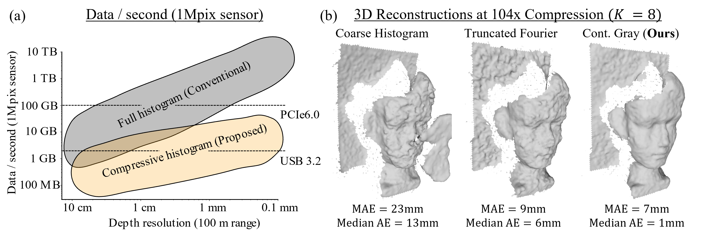

Compressive Single-Photon 3D Cameras
IEEE/CVF Computer Vision and Pattern Recognition Conference (CVPR) 2022
- 1University of Wisconsin-Madison

Overview
Code and data will be posted soon.
Single-photon avalanche diodes (SPADs) are an emerging pixel technology for time-of-flight (ToF) 3D cameras that can capture the time-of-arrival of individual photons at picosecond resolution. To estimate depths, current SPAD-based 3D cameras measure the round-trip time of a laser pulse by building a per-pixel histogram of photon timestamps. As the spatial and timestamp resolution of SPAD-based cameras increase, their output data rates far exceed the capacity of existing data transfer technologies. One major reason for SPAD's bandwidth-intensive operation is the tight coupling that exists between depth resolution and histogram resolution. To weaken this coupling, we propose compressive single-photon histograms (CSPH). CSPHs are a per-pixel compressive representation of the high-resolution histogram, that is built on-the-fly, as each photon is detected. They are based on a family of linear coding schemes that can be expressed as a simple matrix operation. We design different CSPH coding schemes for 3D imaging and evaluate them under different signal and background levels, laser waveforms, and illumination setups. Our results show that a well-designed CSPH can consistently reduce data rates by 1-2 orders of magnitude without compromising depth precision.
Highlights
- A compression framework for SPAD-based 3D cameras based on the coded projection of photon timestamp data.
- Compression is done an online fashion as each photon is detected, and does not require in-sensor storage of large histograms.
- Multiple heuristics on how to design a coding matrix that achieves high compression, while preserving accuracy and mitigating common challenges such as indirect light reflections.
- Evaluation on real-world experimental data from a scanning-based SPAD LiDAR system, and also on physically accurate simulations of a flash illumination SPAD LiDAR system.